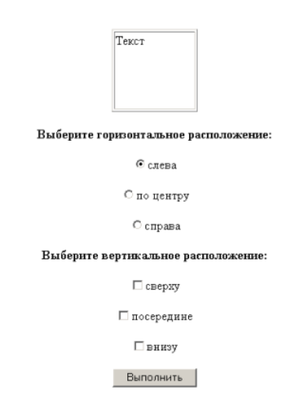

Лабораторная работа №4
Гуценков Никита. Вариант 7
Задание 1
В соответствии со своим вариантом написать Java-скрипт, выполняющий следующие действи

Задание 2
В соответствии со своим вариантом написать Java-скрипт, выполняющий следующие действи
Задание 3
Написать простейшую программу шифрования. Программа каждую букву заменяет на следующую за ней в алфавите («я»
переходит в «а»)
Задание 4
Написать программу, которая в каждом слове перемешивает буквы местами за исключением первой и последней буквы
слова
Задание 5
1. В заголовке окна браузера должны быть ваши фамилия и имя.
2. Необходимо создать html-форму с текстовыми полями для ввода начисленной зарплаты за первые 6 месяцев года.
3. Ниже разместить текстовое поле для вывода вычисленной средней зарплаты за эти месяцы.
4. Вычисление средней зарплаты выполняется после нажатия кнопки «Вычислить».
5. В функции обработки формы в качестве параметра использовать имя формы.
При создании формы установите значения по умолчанию как в образце:

Введите начисленную зарплату за следующие месяцы
Задание 6
Создайте файл lab4-6.html с HTML-формой. В форме можно выбрать:
а) горизонтальное (align, варианты значений: left, center, right);
б) вертикальное (valign, варианты значений: top, middle, bottom) расположение текста в таблице.
Для (а) необходимо использовать переключатели, для (б) - флажки. По умолчанию необходимо установить следующие
значения: для align - «left», для valign - «top».
Обработка формы выполняется при нажатии на кнопку «Выполнить». Над формой должна быть таблица, состоящая из
одной ячейки шириной и высотой 100 пикселов. В ячейку таблицы следует поместить слово «Текст»
